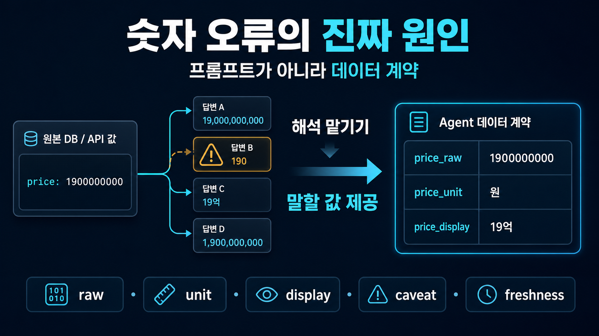
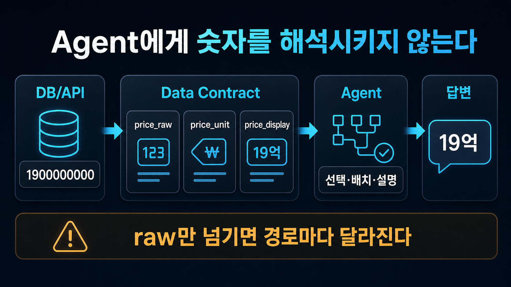

부동산 상담 Agent를 운영하면서 가장 신경 쓰였던 오류는 긴 설명이 어색한 문제가 아니었다. 짧은 숫자가 틀리는 문제였다.
예를 들어 내부 데이터에 매물 가격이 1900000000으로 들어온다. 원 단위로 저장된 19억 원이다. 그런데 Agent가 어떤 응답에서는 19억이라고 말하고, 다른 응답에서는 단위가 어긋난 표현을 만든다면 사용자는 바로 멈칫한다.
“설명이 조금 별로네”가 아니다. “이 Agent를 믿고 가격을 봐도 되나?”가 된다.
처음에는 당연히 프롬프트를 의심했다.
가격 단위를 정확히 변환해.
원 단위 숫자는 억 단위로 자연스럽게 표현해.
근거 없는 숫자는 만들지 마.하지만 로그를 따라가 보니 원인은 다른 곳에 있었다. 같은 raw 숫자를 여러 응답 생성 경로가 각자 해석하고 있었다.
표를 만드는 경로, 본문을 쓰는 경로, 추천 이유를 만드는 경로가 모두 같은 값을 봤다. 다만 각 경로가 “사람이 읽을 수 있는 가격 표현”으로 바꾸는 방식이 조금씩 달랐다.
작은 변환을 모델에게 계속 맡기면, 작은 사고가 계속 난다.
문제는 모델의 계산 실력이 아니라 숫자를 말하는 경로였다
당시 구조를 단순화하면 이랬다.
DB/API 응답
→ raw 숫자 필드
→ Agent가 단위와 표현을 해석
→ 표 / 본문 / 추천 문장 생성겉으로 보면 자연스럽다. 데이터는 숫자를 주고, Agent는 그 숫자를 설명한다.
하지만 이 구조는 Agent에게 매번 작은 판단을 요구한다.
- 이 값은 원 단위인가, 만원 단위인가?
- 사용자에게는 억 단위로 말하는 게 자연스러운가?
- 표와 본문에서 같은 반올림 규칙을 써야 하는가?
- 등록가와 실거래가를 같은 방식으로 말해도 되는가?
- 기준일을 같이 말해야 하는가?
하나하나는 작은 판단처럼 보인다. 그래서 더 위험하다. 작은 판단이 응답 경로마다 반복되면 언젠가 어긋난다.
가격뿐만이 아니다. 면적, 보증금, 월세, 날짜, 거리, 비율도 비슷하다. 값이 맞아도 단위가 틀리면 틀린 답이다. 숫자가 맞아도 기준일이 빠지면 사용자는 다른 의미로 받아들인다.
프롬프트로는 왜 충분하지 않았나
프롬프트는 효과가 있다. “raw 숫자를 그대로 말하지 말라”, “단위를 확인하라” 같은 지시는 분명 일부 오류를 줄인다.
문제는 프롬프트가 일을 없애주지는 않는다는 점이다.
price = 1900000000
Agent = 이 값을 읽고, 단위를 판단하고, 사람이 읽을 표현으로 바꿔야 함이 구조가 유지되는 한 Agent는 가격을 말할 때마다 같은 일을 반복한다.
표를 만들 때 한 번, 본문을 쓸 때 한 번, 추천 이유를 만들 때 한 번. 새로운 데이터 소스가 붙으면 또 한 번.
기존 시세 데이터에는 이미 사람이 읽을 display 값이 있었는데, 신규 데이터 소스에는 같은 패턴이 빠져 있을 수 있다. 그러면 예전에는 고친 줄 알았던 문제가 다른 입구로 다시 들어온다.
그래서 이 문제는 “프롬프트를 더 엄격하게 쓰자”가 아니라 “Agent가 숫자를 해석해야 하는 일을 줄이자”로 봐야 했다.
해결: raw 값과 display 값을 분리했다
바꾼 것은 단순했다. 가격을 이렇게 넘기지 않는다.
{
"price": 1900000000
}대신 계산용 값과 발화용 값을 분리한다.
{
"price_raw": 1900000000,
"price_unit": "KRW",
"price_display": "19억"
}price_raw는 기계가 쓰는 값이다. 정렬, 필터링, 비교, 범위 체크, 테스트에는 raw 값을 쓴다.
price_display는 Agent가 사용자에게 말해도 되는 값이다. 표, 본문, 추천 문장에서는 이 값을 우선 사용한다.
여기서 중요한 점은 display를 UI 장식으로 보지 않는 것이다.
display column은 포맷팅 편의가 아니라 Agent에게 이 값을 이렇게 말하라는 인터페이스다.

이렇게 바꾸면 Agent의 역할이 달라진다.
Before
숫자를 보고 단위와 표현을 추론한다.
After
검증된 display 값을 문맥에 맞게 배치한다.Agent가 숫자를 직접 만들거나 변환할 여지가 줄어든다. 표와 본문도 같은 display 값을 참조하므로 서로 다른 표현이 나올 가능성이 낮아진다.
Agent-facing API는 사람이 쓰는 API와 다르다
사람 개발자는 API 문서를 읽는다. 1900000000이 원 단위 가격이라는 것을 기억하고, 필요하면 변환 함수를 찾아 쓴다.
Agent는 그렇게 일하지 않는다. Agent는 호출 결과 안에 있는 필드 이름, 값의 형태, 도구 설명을 보고 다음 문장을 만든다.
그래서 Agent-facing API는 응답 자체가 해석 가능한 계약이어야 한다.
가격 필드라면 최소한 이런 정보가 같이 있어야 한다.
{
"value_raw": 1900000000,
"value_unit": "KRW",
"value_display": "19억",
"value_basis": "매물 등록가",
"freshness": "2026-05-28 조회 기준",
"speakable": true,
"caveat": "실거래가가 아니라 등록가 기준"
}필드가 많아 보일 수 있다. 하지만 이 정보를 주지 않으면 Agent가 매번 추론해야 한다.
- 이 값은 사용자에게 말해도 되는가?
- 어떤 단위로 말해야 하는가?
- 기준일을 붙여야 하는가?
- 비교 가능한 값인가?
- 주의사항을 함께 말해야 하는가?
Agent 품질은 모델이 얼마나 똑똑한지만으로 결정되지 않는다. 모델이 하지 않아도 되는 해석을 얼마나 줄였는지에 크게 좌우된다.
가격뿐 아니라 면적, 날짜, 비율도 같은 문제다
가격에서 시작했지만 패턴은 다른 필드에도 그대로 적용됐다.
면적은 전용면적인지 공급면적인지에 따라 의미가 달라진다.
{
"area_raw": 84.92,
"area_unit": "m2",
"area_display": "전용 84.92㎡",
"area_basis": "전용면적 기준"
}날짜는 값 자체보다 기준 시점이 더 중요할 때가 많다.
{
"date_raw": "2026-05-28",
"date_display": "2026년 5월 28일 기준",
"freshness_note": "실시간 값이 아니라 조회 시점 기준"
}비율은 분모와 분자가 빠지면 숫자가 혼자 떠다닌다.
{
"rate_raw": 0.136,
"rate_display": "13.6%",
"numerator": 42,
"denominator": 310,
"formula": "converted_users / eligible_users"
}이런 필드는 보기 좋게 꾸민 값이 아니다. Agent가 임의로 단위와 기준을 재해석하지 않도록 만드는 안전장치다.
데이터 계약이 없으면 새 소스에서 같은 버그가 돌아온다
이번에 배운 것은 특정 필드 하나를 고치는 것보다, 새 데이터 소스가 들어올 때 지켜야 할 계약을 만드는 쪽이 더 중요하다는 점이었다.
예를 들어 가격은 아래 계약을 통과해야 Agent 응답에 바로 쓸 수 있다.
가격 → raw / unit / display / basis / caveat / freshness / speakable
면적 → raw / unit / display / basis
날짜 → raw / display / timezone / freshness
거리 → raw / unit / display / route_basis
비율 → raw / display / numerator / denominator / formula새로운 소스가 이 계약을 만족하지 못하면 바로 답변에 넣지 않는다. 먼저 정규화하고, display 값을 만들고, 말해도 되는 값인지 표시한다.
이 규칙이 없으면 “이번 API만 예외”가 쌓인다. 예외가 쌓이면 Agent는 다시 raw 값을 해석하기 시작한다.
테스트도 최종 문장이 아니라 중간 계약을 본다
LLM의 최종 문장을 완벽히 예측하기는 어렵다. 하지만 Agent가 사용할 데이터 계약은 테스트할 수 있다.
예전에는 최종 답변을 읽고 “가격 표현이 맞나?”를 확인해야 했다. 지금은 그 전에 확인할 수 있다.
- price_raw가 있으면 price_unit도 있는가?
- price_raw가 있으면 price_display도 있는가?
- price_display에는 사람이 읽을 단위가 포함되어 있는가?
- freshness나 기준일이 필요한 값인데 빠져 있지 않은가?
- speakable=false인 값이 최종 답변에 노출되지 않았는가?
- 표와 본문이 같은 display 값을 참조하는가?테스트의 위치가 바뀌면 운영 방식도 바뀐다.
모델이 만든 모든 문장을 사후에 감시하는 대신, 모델이 숫자를 말하기 전에 안전한 숫자 표현만 보게 만든다.
프롬프트는 마지막 방어선이어야 한다
프롬프트가 필요 없다는 뜻은 아니다. 다만 첫 번째 해결책이 되면 안 된다.
프롬프트에는 이런 규칙을 둔다.
- raw 숫자를 사용자에게 직접 말하지 않는다.
- display 값이 있으면 display 값을 우선 사용한다.
- 기준일, basis, caveat가 있으면 함께 말한다.
- speakable=false 값은 답변에 노출하지 않는다.
- display 값이 없으면 임의로 변환하지 말고 확인을 요청한다.이 프롬프트는 데이터 계약 위에서 작동할 때 효과가 있다.
price_raw만 주고 “잘 변환해”라고 말하는 것과, price_raw, price_unit, price_display를 함께 주고 “display를 사용해”라고 말하는 것은 다르다.
전자는 Agent에게 해석을 맡기는 구조다. 후자는 Agent에게 계약을 따르게 하는 구조다.
정리: Agent에게 숫자를 잘 말하라고 하지 말고, 말해도 되는 숫자를 줘야 한다
이번 문제를 겪고 나서 숫자 오류를 보는 관점이 바뀌었다.
AI Agent의 숫자 오류는 모델이 덜 똑똑해서만 생기지 않는다. 가격, 면적, 날짜처럼 단위와 기준이 중요한 값을 raw 상태로 넘기고, Agent가 매번 사람이 읽을 표현으로 바꾸게 만들 때 생긴다.
프롬프트는 필요하다. 하지만 프롬프트는 마지막 방어선이다.
먼저 해야 할 일은 데이터 인터페이스를 바꾸는 것이다. 기계가 쓸 raw 값과 사람이 들을 display 값을 나누고, 단위·기준·주의사항·노출 가능 여부를 함께 제공해야 한다.
숫자는 모델이 만들게 하지 말고, 데이터 계약이 말하게 해야 한다.
FAQ: AI Agent 숫자 오류와 데이터 계약
AI Agent가 숫자를 틀리는 가장 흔한 이유는 무엇인가요?
raw 숫자의 단위와 의미를 Agent가 매번 해석해야 하는 구조에서 오류가 자주 생긴다. 가격, 면적, 날짜처럼 단위와 기준이 중요한 값은 raw 값만으로 안전하지 않다.
프롬프트를 강화하면 LLM 숫자 오류를 막을 수 있나요?
일부 오류는 줄일 수 있지만 충분하지 않다. 프롬프트는 Agent에게 조심하라고 말할 뿐, raw 값을 display 값으로 바꾸는 일을 없애지는 않는다. 반복 변환이 필요한 구조라면 같은 문제가 다시 생긴다.
price_raw와 price_display를 왜 나눠야 하나요?
price_raw는 계산과 검증을 위한 값이고, price_display는 Agent가 사용자에게 말해도 되는 값이다. 둘을 나누면 Agent가 가격 단위를 임의로 변환할 필요가 줄어든다.
display 값은 UI에서만 필요한 것 아닌가요?
아니다. Agent가 사용자에게 답변을 생성한다면 display 값은 UI 편의가 아니라 Agent-facing data contract다. Agent에게 “이 값을 이렇게 말하라”고 알려주는 안전한 표현이다.
Agent-facing API에는 어떤 필드가 필요하나요?
고위험 숫자에는 raw 값, display 값, unit, basis, freshness, caveat, speakable 여부를 함께 두는 것이 좋다. 숫자의 의미가 단위나 기준에 의존한다면 Agent가 추론하지 않게 해야 한다.
어떤 값부터 데이터 계약을 적용해야 하나요?
가격, 보증금, 월세, 면적, 거리, 날짜, 비율, 순위처럼 잘못 말했을 때 신뢰나 의사결정에 영향을 주는 값부터 적용하는 것이 좋다.